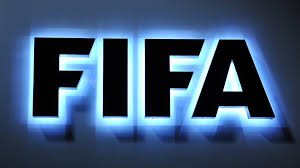

La Federación Internacional de Fútbol Asociación (en francés, Fédération Internationale de Football Association) universalmente conocida por sus siglas FIFA, es la institución que gobierna las federaciones de fútbol en todo el planeta. Se fundó el 21 de mayo de 1904 y tiene su sede en Zúrich, Suiza. Forma parte del IFAB, organismo encargado de modificar las reglas del juego. Además, la FIFA organiza la Copa Mundial de Fútbol, los otros campeonatos del mundo en sus distintas categorías, ramas y variaciones de la disciplina, y los Torneos Olímpicos a la par del COI.
La FIFA también se ocupa de la organización de los Campeonatos Mundiales de Fútbol en sus diferentes modalidades, así como de los Torneos Olímpicos junto al Comité Olímpico Internacional. Este organismo agrupa doscientas once federaciones o asociaciones de fútbol de múltiples países, por lo que cuenta con dieciocho países afiliados más que la Organización de las Naciones Unidas, cuatro menos que la Federación Internacional de Baloncesto y tres menos que la Asociación Internacional de Federaciones de Atletismo.
Desde agosto de 1993 se utiliza un sistema de clasificación para determinar cuáles son las mejores selecciones de fútbol masculino entre todas las que pertenecen a este organismo, el cual es denominado Clasificación Mundial FIFA/Coca Cola.
Desde el mes de septiembre de 2009, la FIFA comenzó a editar su revista oficial, pero además dispone de sitio web y publica sus estatutos, documentos y circulares. Todos los números de la revista de este organismo se publican en inglés, francés, español y alemán.

Organización de la FIFA
Cualquier federación o asociación a cargo de la organización del fútbol en su país tiene abierto el ingreso a la FIFA. Por norma general, tan solo puede haber un único afiliado por país, aunque existen algunas excepciones como es el caso de las naciones británicas, que están constituidas por las cuatro asociaciones de fútbol de Irlanda del Norte, Gales, Escocia e Inglaterra. Esto se debe a que el Reino Unido es el lugar donde surgió el fútbol moderno. También está el caso de la selección de las Islas Feroe, las cuales son independientes de Dinamarca.
A continuación, se mencionan las confederaciones que la FIFA tiene afiliadas a nivel de continentes:
La Confederación Sudamericana de Fútbol o CONMEBOL desde el año 1916.
La Unión de Asociaciones Europeas de Fútbol o UEFA desde el año 1954.
La Confederación Asiática de Fútbol o AFC desde 1954.
La Confederación Africana de Fútbol desde 1957.
La Confederación de Fútbol de Norte, Centroamérica y el Caribe o CONCACAF desde 1961.
La Confederación de Fútbol de Oceanía u OFC desde 1966.
Fundación FIFA
La Fundación FIFA se creó en marzo de 2018 como entidad independiente, con los objetivos de contribuir a la promoción de un cambio social positivo y de recaudar fondos para la rehabilitación y reconstrucción de infraestructuras deportivas dañadas o destruidas alrededor del mundo. Además de ello, dicha fundación tiene numerosos proyectos en marcha, como el Comunitario o el de Recuperación, y también programas especializados como el de Fútbol para mujeres en Oriente Medio. Cabe destacar que durante la Copa Mundial de la FIFA 2018, Moscú albergó el Festival Fundación FIFA con la finalidad de reunir a organizaciones no gubernamentales de todo el mundo para realizar actividades de intercambio, aprendizaje y jugar al fútbol.La Fundación se encuentra dirigida por una junta, la cual está compuesta por el presidente de la FIFA y al menos otros dos miembros. Inicialmente, componen la Junta: Gianni Infantino, presidente de la FIFA y expresidente de la Junta de la fundación; Sonia Fulford, miembro del Consejo de la FIFA y vocal de la Junta de la fundación; y Lydia Nsekera, miembro del Consejo de la FIFA y vocal de la Junta de la fundación.
El 28 de enero se 2020 se dio a conocer que el próximo presidente ejecutivo de la junta de la Fundación FIFA será el expresidente argentino, Mauricio Macri. El exmandatario realizará este trabajo Ad honorem. Actualmente su director general es el exfutbolista campeón del mundo Youri Djorkaeff y su enfoque prioritario es la educación a través del programa Football for Schools. Así mismo dicho ente tiene el objetivo de recaudar, junto con socios de todo el mundo y de diferentes sectores, mil millones de dólares para invertirlos en programas educativos.
El encargado de realizar este anuncio fue Gianni Infantino, presidente saliente de la Junta. En el anuncio dijo "Es un grandísimo placer y todo un honor poder anunciar que Mauricio Macri asumirá este cargo al frente de la Fundación FIFA", además agregó "Mauricio tiene el perfil ideal para liderar este proyecto, que quiere poner el fútbol al servicio de la sociedad. A través de su experiencia como líder de una gran nación conoce el rol central que tiene la educación para el futuro de nuestras sociedades y, como dirigente de uno de los clubes de fútbol de mayor éxito, sabe la fuerza y la pasión únicas que genera nuestro deporte. Su experiencia y visión de futuro permitirán, sin duda, que nuestra fundación intensifique su labor y amplíe su ámbito de acción para contribuir a mejoras sociales en todo el mundo".
HIMNO DE LA FIFA
Desde la Copa Mundial de Fútbol de 1994, así como en la Liga de Campeones de la UEFA, la FIFA adoptó un himno compuesto por el alemán Franz Lambert, el cual no tiene letra, solo música instrumental. El Himno de la FIFA se toca antes de que se jueguen partidos internacionales, inclusive partidos amistosos, Copa Mundial de Fútbol, Copa Mundial Femenina, Mundial Sub 20 y Sub 17, así como en las finales de los torneos nacionales u otros eventos especiales como el día del Fair play. En 2004, es decir, para las vísperas de la conmemoración del centenario de la FIFA, el músico japonés Gota Yashiki efectuó unos arreglos para este himno.
Para mas informacion haga clic aqui!